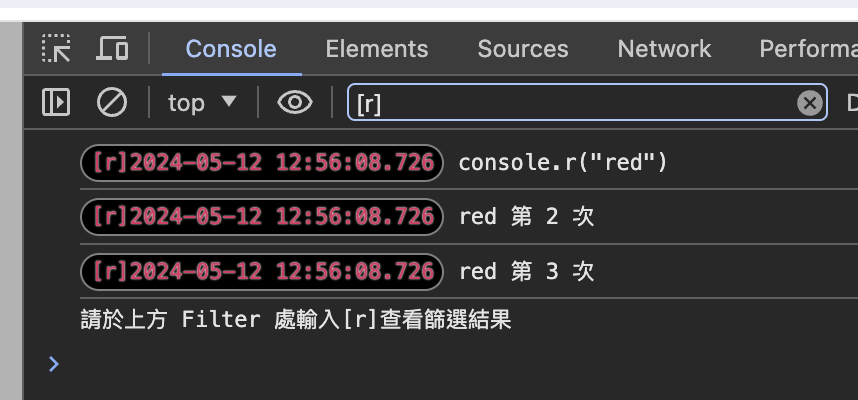

Useful Utility
- enjoy your life -
001-console-pro
讓你的 console.log 更實用, 1.詳實紀錄時間戳 / 2.六種顏色分類 / 3.同種顏色篩選
Run
點擊 run 並請開啟 console 面板 console.log('API demo, 不同功能用不同顏色表示, 端看開發人員如何分類') console.r('console.r("red")') console.o('console.o("orange")') console.y('console.y("yellow")') console.g('console.g("green")') console.b('console.b("blue")') console.p('console.p("purple")') console.r('red 第 2 次') console.r('red 第 3 次') console.log('請於上方 Filter 處輸入[r]查看篩選結果')

002-mobile-log
在網頁上輸出console.log資料，手機的 debug 要 remote debug比較麻煩，在此提供簡易的手機除錯方法
Run
按 run 後請點選下方按鈕測試，或在 console 面板輸入 console.log('test') 試試
console.log('你辦到了')
console.log(123)
關閉 log 面板